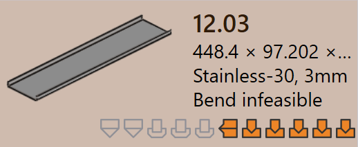
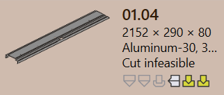

零件状态
当零件导入到 TruSmartCAM 时，相关的钣金工艺会自动处理到零件上。作为此过程的一部分，TruSmartCAM 会执行验证
零件状态直接显示在零件磁贴上，位于零件名称下方，指示零件的当前验证状态。
零件状态类型描述了零件作为零件级验证检查的结果可能处于的不同状态。这些状态表示与零件设计、材料或几何形状相关的问题，必须在工装开始之前解决。
零件错误
CAD（计算机辅助设计）错误发生在零件设计或几何形状存在问题时，例如开放轮廓、缺少几何形状或未分配材料。这些错误源自 CAD 模型，会阻止零件进一步处理。
-
折弯不可行：TruSmartCAM 会自动尝试为零件找到有效的折弯方法。如果找不到任何合适的折弯解决方案，则该零件标记为折弯不可行。
-
Cut infeasible：如果忽略折弯警告，TruSmartCAM 会尝试找到切割方法。如果找不到有效的切割解决方案，则该零件标记为切割不可行。
 
材料错误
-
材料不存在：零件的厚度从 CAD 模型中读取，并与 TruSmartCAM 原材料数据库中的材料进行匹配。如果找不到匹配的材料，该零件将标记为 材料不存在 错误。
-
材料未分配：如果 CAD 模型没有材料映射字段或字段为空，TruSmartCAM 无法分配材料。在这种情况下，该零件标记为 材料未分配 错误。


几何形状错误
-
检测到开放轮廓：CAD 文件中有一个或多个开放（不完整）的形状，这会阻止正确的工装。
-
检测到多个外轮廓：CAD 文件有多个外部封闭环，这会在处理过程中造成混乱。
-
Nascent error：当零件从电子表格（CSV 或 XLSX）加载，但实际的 CAD 文件缺失时，它被标记为初始零件。
-
几何形状缺失：CAD 模型没有有效的几何形状或几何形状不可读，使其无法用于工装。